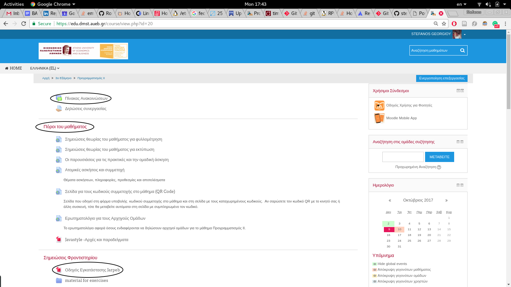
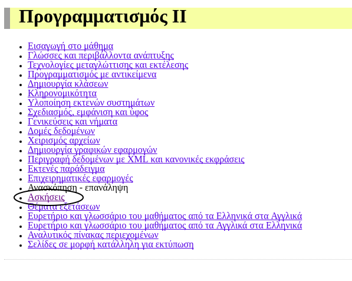
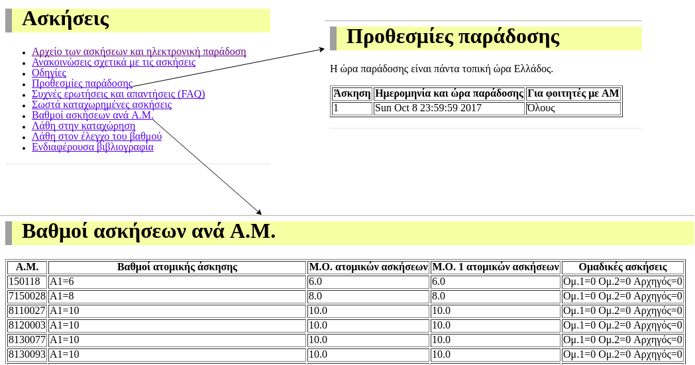
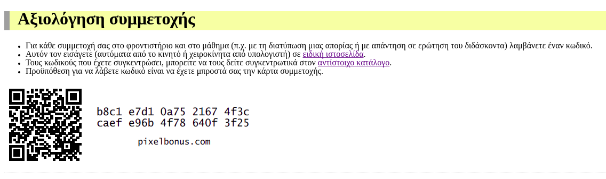
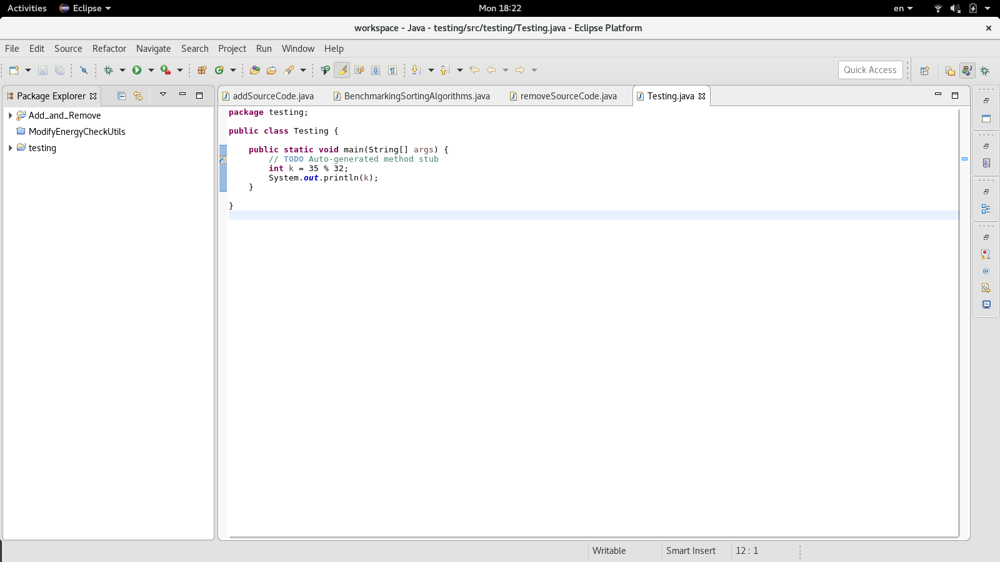
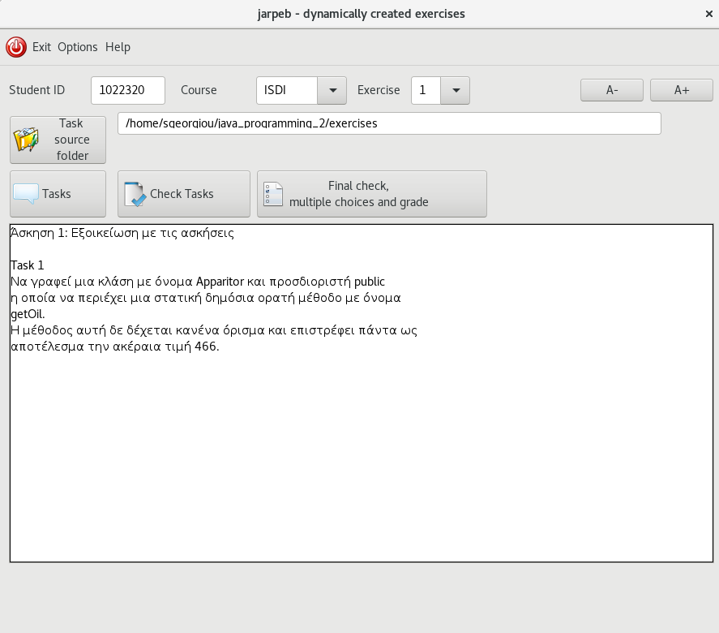
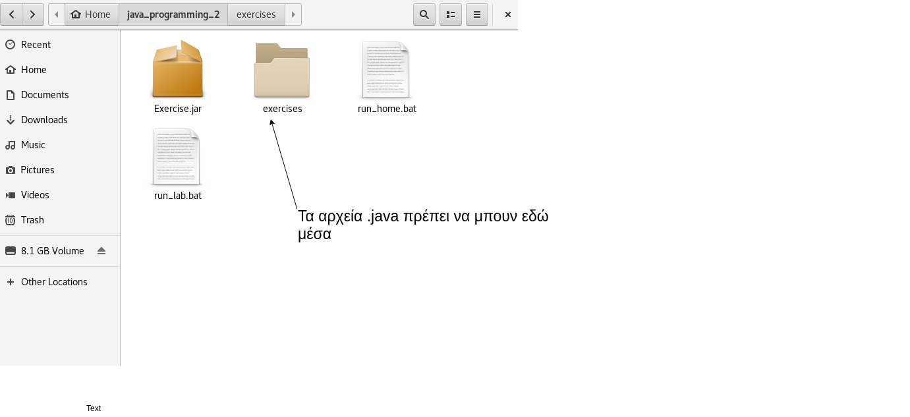
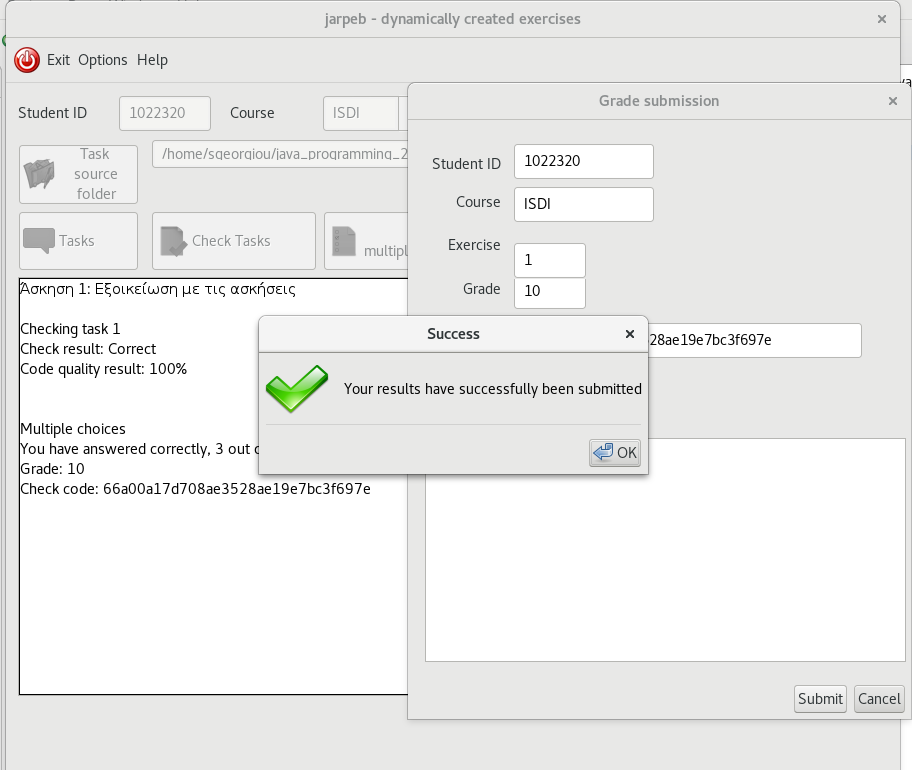
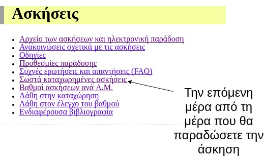

Προγραμματισμός ΙΙ: Εισαγωγή στο Jarpeb


Προγραμματισμός ΙΙ
Φροντιστήριο 1 (A' μέρος)
Στοιχεία Μαθήματος
- Μάθημα: Προγραμματισμός ΙΙ
- Καθηγητής: Διομήδης Σπινέλλης
- Βοηθοί: Στέφανος Γεωργίου και Θεόδωρος Στασσινόπουλος
- Θεωρία και ατομικές ασκήσεις: κάθε Δευτέρα. 3-5μμ, Δ23
- Πρακτικές και ομαδικές ασκήσεις: κάθε Τετάρτη 3-5μμ, Α23
- Φροντιστήριο: κάθε Τρίτη, 3-5μμ, Α23
- Εργαστήριο: 4 ώρες/εβδομάδα (Τετάρτη και Πέμπτη, 5-7μμ, ELOI2)
Σημειώσεις μαθήματος

https://edu.dmst.aueb.gr/course/view.php?id=20
Σημειώσεις Θεωρίας και Σύνδεσμοι Ατομικώ Ασκήσεων

https://www2.dmst.aueb.gr/dds/isdi/index.htm
Ατομικές Ασκήσεις

https://www2.dmst.aueb.gr/dds/isdi/exercise/index.htm
Αξιολόγηση Συμμετοχής

https://www2.dmst.aueb.gr/dds/isdi/intro/token.htm
Φροντιστηριακές Παραδόσεις
- Εκμάθηση και υποστήριξη του Jarpeb (Java Randomised and Psersonalized Exercise Builder)
- Επεξήγηση ασκήσεων ατομικών
- Επίλυση αποριών και ασκήσεων
Απαιτήσεις για το Σύστημα Ασκήσεων
Κριτήρια Βαθμολογίας Ατομικών Ασκήσεων
- Υλοποίηση του προγράμματος κάθε άσκησης
- Μορφοποίηση του προγράμματος κάθε άσκησης
- Απαντήσεις στις ερωτήσεις πολλαπλής επιλογής
Προγραμματισμός σε Java
- Διορθωτής (editor) + Μεταγλωττιστής (compiler)
ή
- Ολοκληρωμένο Περιβάλλον Ανάπτυξης Εφαρμογών (Integrated Development Environment - IDE)
Editors
- TextPad
- Notepad++
- Notepad
- Vim
- Emacs
- Sublime
- TextEdit
Integrated Development Environments - IDEs
- Eclipse
- NetBeans
- IntelliJ
Παράδειγμα 1

Μεταγλώττιση και Εκτέλεση από τη Γραμμή Εντολών
- Μεταγλωττίζουμε το πρόγραμμα με την εντολή javac <όνομα αρχείου.java>
- Αν δεν έχουμε κάνει λάθη τότε θα δημιουργηθεί ένα αρχείο με κατάληξη .class
- Εκτελούμε το πρόγραμμα με την εντολή java <όνομα αρχείου> (χωρίς την κατάληξη .class)
Παράδειγμα 2


Έλεγχος Υλοποιήσης

Ποιότητα Μπρφοποίησης
- Κενό πριν την αγκύλη {
- Όχι κενό μετά την παρένθεση (
- Κενό πριν και μετά τους τελεστές (==, <, >, &&, ||…)
- Κενό πριν και μετά τα σύμβολα των πράξεων (+, -, \, %)
- 1 κενή γραμμή πριν κάθε νέα μέθοδο
if {
...
} else {
...
}
Έλεγχος Καταχώρησης


This work is licensed under a Creative Commons Attribution-NonCommercial-ShareAlike 4.0 International License.